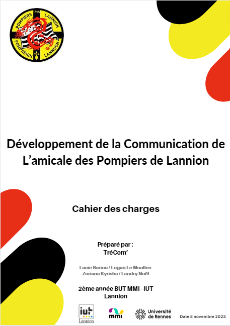
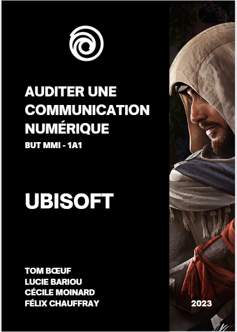
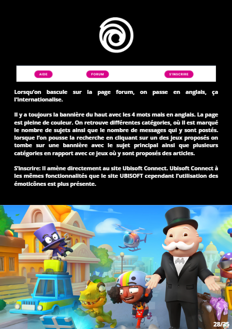
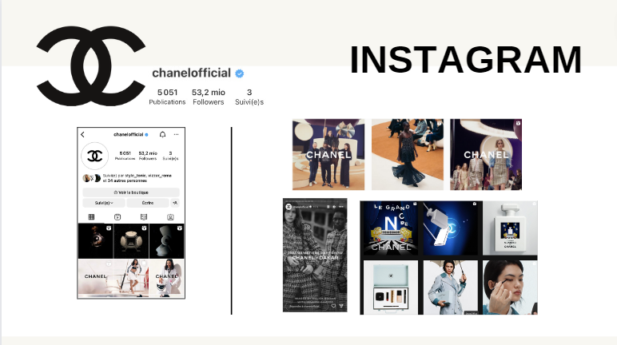
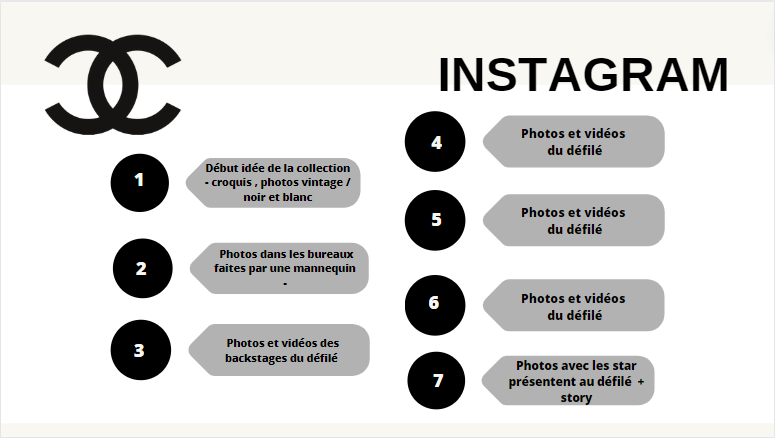

Projet Amicale pompier de Lannion :
Développement de la communication de l’amicale des pompiers de Lannion. Projet Semestre 3 MMI
Ce projet à été mis en place dans le cadre de la formation. Parmi différents projets proposés, notre équipe a choisi de collaborer avec l’amicale des Pompiers de Lannion.
Dans ce projet implique 3 parties prenantes. Tout d’abord, TréCom’ qui est composé de 4 étudiants chacun spécialisé dans leur domaine. Mon rôle dans ce projet est cheffe de projet ainsi que responsable de la partie communication. Ensuite l’amicale des pompiers de Lannion et enfin, l’équipe pédagogique.
L’objectif principal de ce projet est d’améliorer l’organisation quotidienne de l’amicale et de dynamiser la communication sur différents réseaux sociaux comme Instagram, Facebook et TikTok afin de mettre en valeurs les pompiers de Lannion pour tous les habitants du Trégor.
En parallèle, ce projet vise à développer nos compétences en communication, audiovisuel, graphisme et gestion de projet ainsi qu’a comprendre et répondre aux attentes des clients.
La première partie de ce projet porte sur la gestion de projet ainsi que le marketing.
Afin que le projet se déroule dans de bonne condition, nous avons chacun des rôles définis qui correspondent à nos domaines où nous sommes le plus à l’aise :
Pour la gestion projet nous avons mis en place plusieurs outils comme un Gantt, SWOT, PESTEL, lean canvas, carte d’empathie et un cahier des charges. Pour le marketing, un questionnaire à été diffusé pour connaître notre cible.
Audit communication numérique
Cet audit à été réalisé dans le cadre d'un projet dans ma formation lors de mon semestre 1.
Pour ce projet en groupe, nous devions auditer un site web de marque et /ou produits d'une entreprise locale de notre choix.
Et c'est Ubisoft qui a retenu notre attention.
Afin de réaliser cet audit au complet, nous nous sommes divisé le travail. Mon rôle dans cet audit concernait la sémiotique sur tout le site Ubisoft. J'ai analysé chaque page, chaque mots, même les bannières, et comment certains éléments sont mis en avant, comment ils font pour attirer l'utilisateur à cliquer etc… Voici ma conclusion : Pour conclure, les éléments sont mis en avant grâce à plusieurs éléments tels que : Caractère en gras, grosse police, logos ou encore la couleur.




Recommandation d'une communication numérique
Ce projet à été réalisé dans le cadre de la MMI au semestre 2.
En groupe de 4, nous devions réaliser une campagne sur les réseaux sociaux pour annoncer un “salon” pour une marque. Avec mon groupe nous avons choisi Chanel et pour le salon nous avons choisi la fashion week.
La campagne devait être réalisée sur différents réseaux sociaux ( Facebook, Youtube, Instagram, Twitter …)
Mon rôle était de promouvoir la fashion week sur Instagram. J'ai tout d'abord pris connaissance de l'histoire de la marque et après analysé leur Instagram. Jai analysé leur façon de promouvoir un produit ou même un événement.
Pour les défilés tel que les fashion week, Chanel ne les promouvait pas. C'est seulement après celui-ci que des clichés ou vidéos sont publiés sur les réseaux sociaux.
Pour cette campagne, j'ai choisi de faire une rétrospective sur le défilé pendant 7 jours suite au défilé. Sur instagram, nous verrons 3 formats de post , photos / vidéos et story. Les premiers posts se feront quelques heures après le défilé. Ils consisteront à montrer les backstages à partir du début de la collection. En début de semaine sur les 3 premiers jours porteront sur les backstages avec des photos pas trop travaillé ( appareil photos basique par une mannequins), ensuite pendant 3 jours des photos et vidéos sur le défilé et enfin le dernier jour, des photos de star présente lors du défilé ainsi qu'une story, avec une vidéo avec des moments de la fashion week.